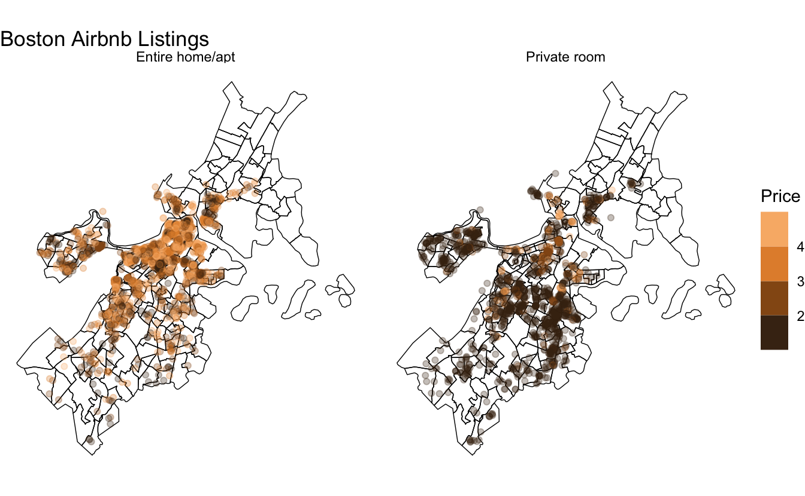

Urban Informatics is a field of study based strictly on the urban environment and more specifically, cities. The urban environment is a very real and physical place. It is not some metaphysical conception that can only be spoken about in broad strokes. There are buildings, roads and intersections, land marks, restaurants and many other physical attributes that make up a city.
The city is a place. But when we refer to the city is a place, we are referring to some amorphous geographical boundary which has within it, more places. Boston is a city with clear physical boundaries on it’s Eastern and Northern sides—the Atlantic and the Charles river—though within it there are further places. There are neighborhoods like the South End and Back Bay which are also places with clearer and distinct boundaries. Within these there are further places like Blackstone Square and the Prudential Centers. These smaller places server a general interest. They can be referred to as land marks and are referenceable with a large degree of accuracy. These types of places are called places of interest.
Places of interest, or POI, are locations that can be accurately located on the map which have some interest to the general public. POI have become increasingly important to the field of urban informatics with companies such as SafeGraph and Foursquare providing place based data. The data can be used to understand land use patterns, street networks, and so much more. Many people are using POI data extensively to understand the coronavirus pandemic (see SafeGraph research here).
One of the largest challenges to POI data is that of coverage. How many of the total POIs in a region are actually recorded in a database? How can we be certain that when using POI data that it is accurate? How do we best record changes to the environment when a POI, say restaurant, now longer exists?
From my perspective, there seems to be no cohesive or theoretical definition of a place of interest other than “a place of interest.” Perhaps the phrase is so simple that it does not need further clarification. But there are still some questions that I suspect need further elaboration. Most pressingly, and this may be a futile line of thought, what actually makes a POI interesting? Seemingly anything maybe a POI and is determined by those who generate or provide the data. The criteria seems that the data must 1) have a coordinate point and 2) be able to described as a place.
The Boston Area Research Initiative (BARI) collects Boston based POI data. Among the many data resources they provide are the locations of Boston Airbnbs as provided by Inside Airbnb. These data are used extensively within the Urban Informatics program.
The below map utilizes the Airbnb POI data to illustrate spatial distribution and price of Airbnb listings within Boston.

Sign up for our (infrequent) newsletter to stay up to date.